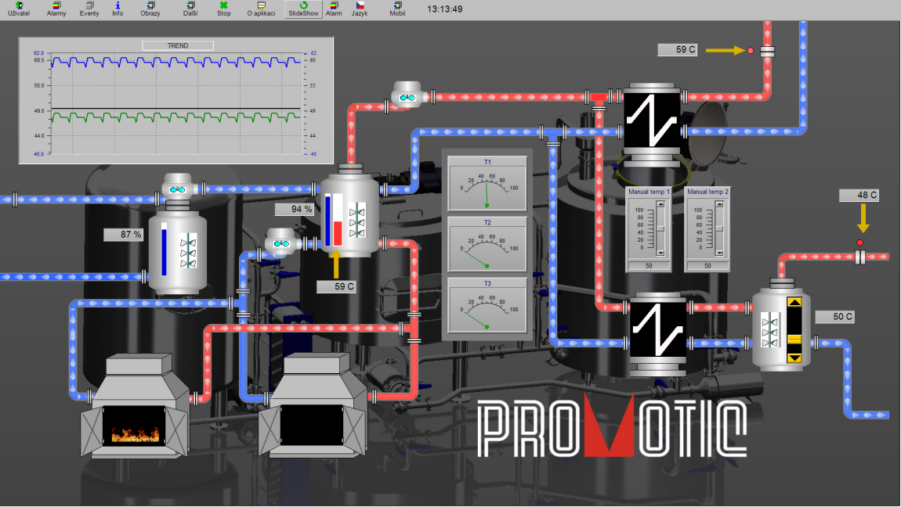
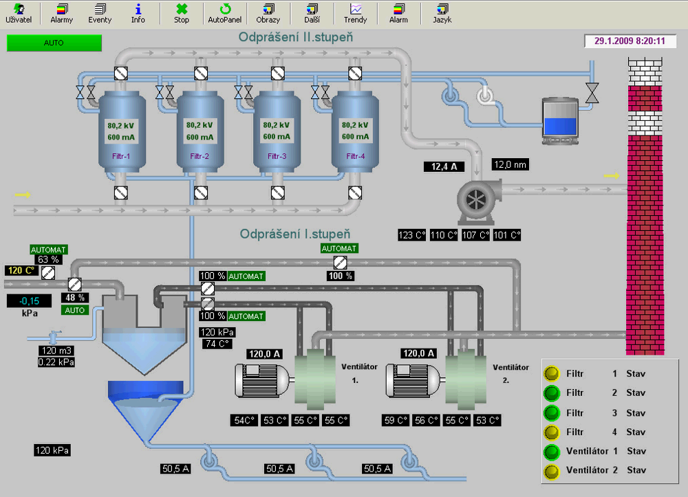
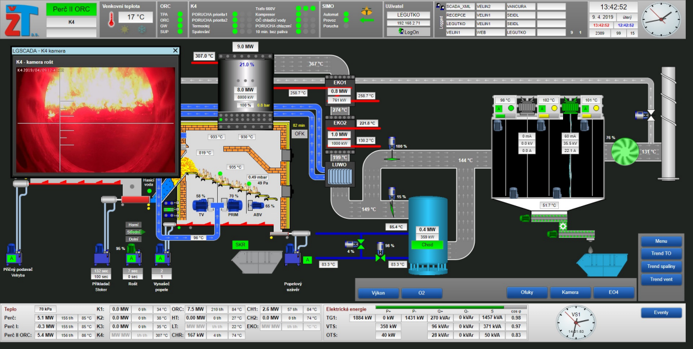
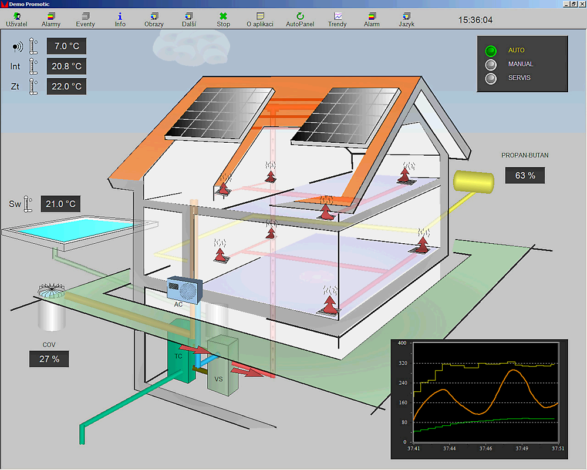
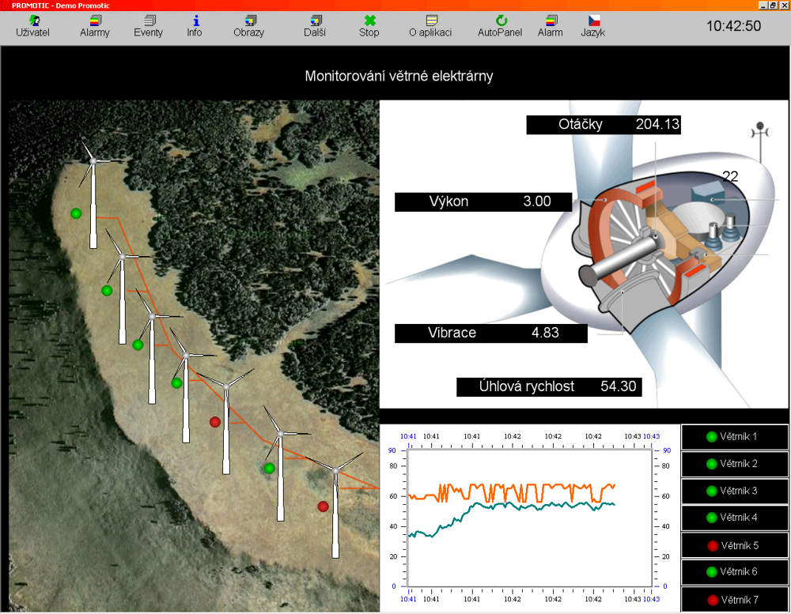
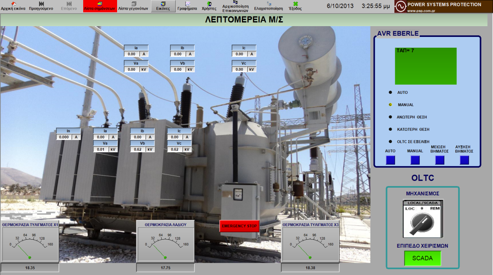
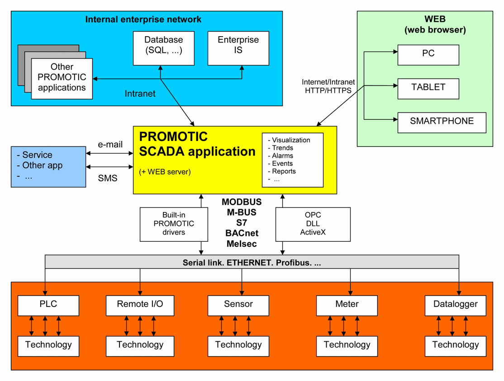
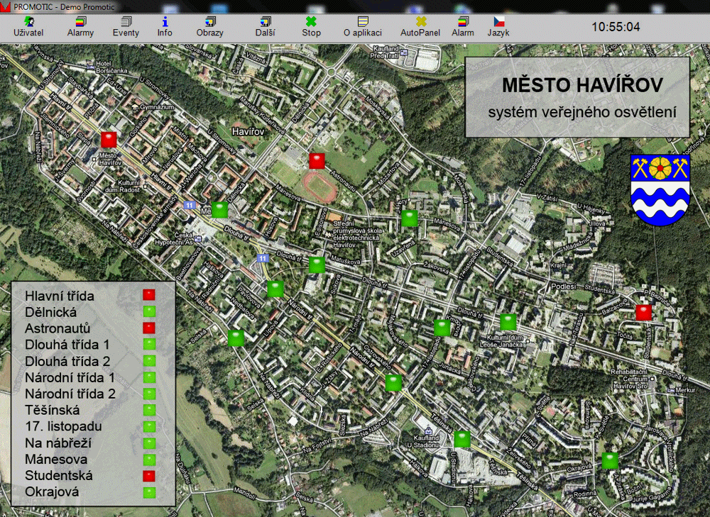

 How to start working with the PROMOTIC system?The PROMOTIC SCADA system is designed in order to be easily accessible to new users. You don't have to wait for anything - download the free PROMOTIC installation package and let the basic coursebook lead you to create your first SCADA application. It is that easy!
-
How to start?  PROMOTIC as FREEWAREThe PROMOTIC SCADA system is now also available as FREEWARE, i.e. downloadable and functional free of charge. In the freeware mode, it is possible to use all communication drivers and interfaces, that are available in the commercial mode. The runtime of freeware applications is not limited. The only limitation of the freeware mode is the maximum size of applications up to 30 variables.
-
Freeware PROMOTIC  OPENNESS OF THE PROMOTIC SYSTEM PROMOTIC SCADA software is a very open system thanks to its integrated interfaces and communication drivers. However, its openness does not end here: all users are always provided with a publicly available price list of all PROMOTIC licences as well as complete documentation containing thousands of pages of information, examples and procedures.
 UPGRADES TO NEW VERSIONS FREE OF CHARGEThe new versions of the PROMOTIC system are available several times during each year. Contrary to many other SCADA systems, the upgrades to new versions of our system are available free of charge for all users. Download the latest version of the PROMOTIC system now!
-
Download  REFERENCES OF PROMOTIC SCADA APPLICATIONSOver the decades that have passed since we introduced the PROMOTIC SCADA software to the market, this tool has been used on thousands of applications across a wide range of industrial automation segments. Manufacturing, energetics, BMS, security, HVAC, warehouses - these are just some of the areas where PROMOTIC SCADA system is being successfully used. For detailed descriptions of some of the interesting applications, visit the "Application Reference" section of this site.
-
PROMOTIC - Application references  PRECONFIGURATIONS IN THE PROMOTIC SYSTEMIn order to simplify and accelerate the creation of applications in PROMOTIC SCADA, the software includes the preconfigurations. These are functionally preset PROMOTIC system objects (such as communication) that can be easily inserted into the application to get the desired functionality instantly. Preconfigurations also include various graphic objects that we have programmed for useful and frequently used features. The set of preconfigurations is constantly being expanded and complemented.
-
Preconfigurations  COMMUNICATION POSSIBILITIESThe PROMOTIC SCADA system offers multitude of communication possibilities. The built-in communication drivers, standardized interfaces, database connectors, Web server – all these features give the users almost ulimited options of the PROMOTIC system integration into their technologies and projects.
-
Communication  OUR SERVICESTogether with the development and distribution of the PROMOTIC system we provide a wide spectrum of related services and complex solutions: